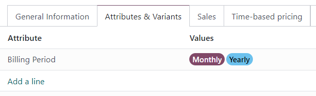

Use subscriptions in the eCommerce shop¶
Subscription products can be sold in the Odoo eCommerce shop just like regular sales products.
However, by default, the eCommerce product page only displays the shortest recurrence period listed in the Time-based pricing tab of the product form. For example, if a subscription product has monthly and yearly recurrence periods configured, then only the monthly price appears on the eCommerce page for that product by default.
To add more recurrence periods to the eCommerce product page, create a product variant for each recurrence period.
Create recurrence periods as product variants¶
To set up each recurrence period as a product variant, go to and select a product. In the Attributes & Variants tab, click Add a line.
Create an Attribute called Billing Period (or something similar) by typing in the
name and clicking Create. This attribute name appears as the option heading on the
product page of the eCommerce shop.
Next, create Values that correspond to the recurrence periods that are configured in the Time-based pricing tab of the product form. Type in the name of the recurrence period, then click Create. These value names appear as selectable options on the product page of the eCommerce shop.
Click on the ☁️ (cloud) icon at the top of the page to save manually. After saving, a Product Variants column appears on the Time-based pricing tab. Assign the product variants to their corresponding recurrence periods and prices.
The product variants are now available for selection on the eCommerce product page.